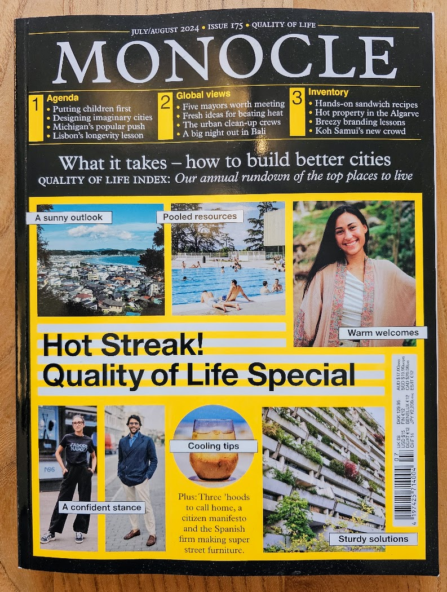

There is a professional library — data modelling, architecture, method. This is the rest of it: design, cities, culture, and a persistent case of wanderlust that paper seems to feed rather than cure.
Print, deliberately. These are the things worth having in your hands.

../assets/reading-hero.jpgThe ones that arrive and get read rather than stacked.
Design, cities, business and the world reported like all four are the same subject — which, mostly, they are. The quality-of-life surveys are the closest thing I have found to a decent argument about what makes a city work.
Travel and culture at a slower speed. Read for the tone as much as the content.
Home-turf business and ambition. Not sophisticated; occasionally exactly right about how things really work here.
Two houses where the imprint alone is a reason to pick a book up.
Berlin. Design, architecture, travel and visual culture, made as objects rather than products. The books that stay on the table instead of going to the shelf.
The other side of the same instinct: art and architecture at a scale and a price that made serious visual culture ordinary. Occasionally excessive, and better for it.
The thread that runs under most of this shelf.
The itch these books feed has its own property: Structured Wandering — travel chosen on purpose, curated by a system rather than a feed. This shelf is where the wanting starts; that site is where it gets organised.
Not a claim — a trail. The follow log has Alaska (2016), Yosemite (2019), Yellowstone (2021), plus Patagonia, Iceland, Norway and the Slovenian Alps. The reliable destination type: landscape at a scale that does not care whether you are impressed.
Ausangate in Peru followed in 2011; Wildland Trekking, Highland Explorer, a hiking meetup, a Casio Pro Trek. The way a place actually gets read — everything worth seeing is at walking pace, and the good days turn out afterwards to have been the ones spent walking.
Followed under a dozen different names across fifteen years — party events early, then hotspots, then a lifestyle magazine and quiet villas. The relationship with the island grew up; it did not end. The music side is on its own page.
Not fridge magnets: the object that makes a place retrievable years later. A small physical index into a memory — which, now that I write it down, is the same trick as everything else I build.
From the library analysis: 16 books on psychology and wellbeing, 12 on productivity, 11 on mental models, 7 on travel, 5 on minimalism.
Which of those actually earned their place, with a line each. The productivity and mental-model half is already on Practice.